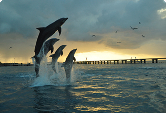
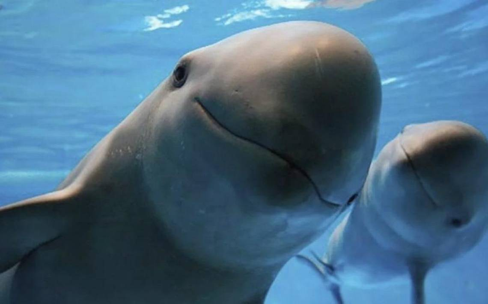

Conócenos
De sobra es ya conocido, que en el mar conviven numerosas especies acuáticas, bien sean animales o plantas, las cuales conforman un amplio y variado ecosistema. Sin embargo, dicho ecosistema está sufriendo importantes pérdidas, muchas de ellas irreversibles, debido a la acción humana incontrolada.
Hechos tales como la pesca incontrolada, la acidificación del agua, la gran contaminación que sufren los mares y océanos, y el cambio climático, del cual, somos los principales responsables, está teniendo como consecuencia que numerosas especies marinas se encuentren en peligro de extinción.
Misión
Garantizar el bienestar de los Mamíferos Marinos bajo cuidado humano, asegurando la educación continua a través de estos embajadores de la vida marina, contribuyendo así, a la protección de las especies y conservación de los océanos.
Visión
Ser una comunidad sin fines de lucro referente en materia de interacción y conservación de Mamíferos Marinos bajo cuidado humano, ser una fuente permanente de información fidedigna sobre la importancia que poseen estos hábitats para la conservación de los océanos y sus ejemplares.
Valores
- Honestidad y transparencia.
- Respeto a las normas y obligaciones sin distinción.
- Responsabilidad social.
- Promover y ejercer el estricto cuidado del entorno y medio ambiente.
- Impulsar el cuidado y bienestar animal lícito y ordenado.